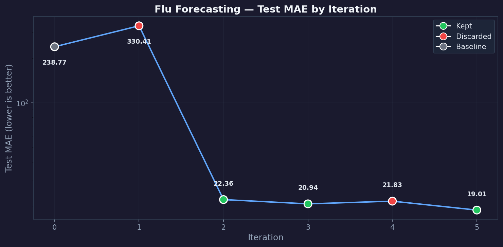

Autonomous research pipeline — 5 iterations with RAG-based literature grounding

| # | Status | MAE | Change | Hypothesis | Mechanism |
|---|---|---|---|---|---|
| 0 | baseline | 238.7726 | Initial baseline run (30 pretrain + 10 finetune epochs) | Establish baseline metric | Measure initial model performance on flu forecasting |
| 1 | discard | 330.4117 | Gradient clipping max_norm=1.0 (worsened) | Gradient clipping stabilizes training by capping gradient magnitudes, preventing the diffusion model from overfitting to US-specific noise patterns and improving generalization to unseen country domai | torch.nn.utils.clip_grad_norm_ after loss.backward() limits L2 norm of gradients, preventing exploding gradients from outlier ILI data points. |
| 2 | keep | 22.3607 | Auxiliary x0 prediction loss (self-consistency) in diffusion pretrain | Adding an auxiliary x0-prediction loss to diffusion pretraining encourages the denoiser to produce accurate reconstructions, leading to better forecasting features and improved cross-country generaliz | The x0-prediction term MSE(x0_hat, x0) with weight 0.05 aligns the denoising direction with the true data manifold, regularizing the noise-prediction objective (self-consistency training). |
| 3 | keep | 20.9385 | Increase x0 self-consistency loss weight 0.05->0.15 | Increasing the x0 prediction loss weight strengthens the self-consistency training signal, further improving the denoiser's reconstruction quality. | Higher weight (0.15) on MSE(x0_hat, x0) places more emphasis on accurate x0 reconstruction, aligning gradient signals with the true data manifold. |
| 4 | discard | 21.8280 | Dropout 0.15->0.05 (slightly worsened) | ||
| 5 | keep | 19.0133 | Linear beta schedule (1e-4 to 0.02) | A linear beta schedule is better suited for smooth time series data like ILI than the cosine schedule designed for natural images. | Linear schedule provides a more uniform noise distribution across 30 diffusion steps, allowing the denoiser to learn more consistent denoising patterns for smooth ILI signals. |